Les personnages qui parlent dans le prototype pour les investisseurs, et les figurants utiles :
rôle tiré des documents, caractère, manière de parler pour les dialogues, et réglages de visage proposés pour
MetaHuman. Ce sont des propositions, à valider ; le détail et toutes les sources sont dans
.equipe/prototype/fiches-pnj.md.
En bref
13PNJ qui parlent ou peuvent parler
16planches générées cette nuit (ChatGPT via Codex)
0réglage de visage repris de celui du héros (Victor, Orlando)
Chaque planche montre le même personnage deux fois : portrait de trois quarts et vue en
pied, sur fond neutre, dans le style des fiches du 29/09. Le texte en blanc vient des documents ou des décisions
(D-xx) ; le reste est proposé ici. « MetaHuman » : l'outil d'Epic qui fabrique les visages ; chaque visage mêle
trois visages de départ fournis par l'outil (D-179 : tous différents, tous plausibles).
Le Hameau de la Brume et ses abords
Hameau pauvre de 80 habitants, une seule conscience collective : méfiant au début, amical après une quête, hostile ou terrifié si un habitant voit un crime ou la magie (Topographie, IA Collective ; D-38).
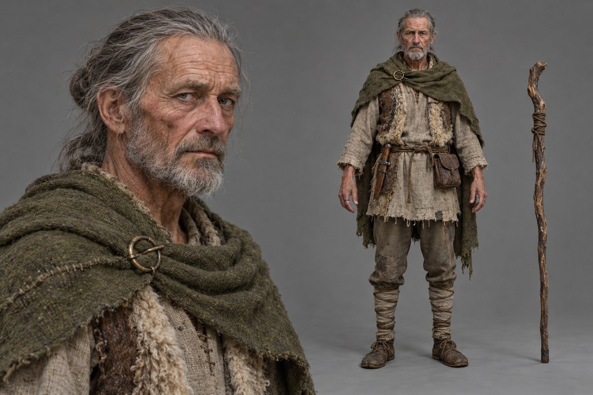
Parle
Le chef du Hameau de la Brume
Offre la prime du nid, hors de vue du hameau ; oriente le héros vers Oakhaven et lance la QP1 (moment à définir). Topographie POI A, § 4 ; D-35, D-150.
Qui 65 ans, sec, un peu voûté. Prudent, méfiant envers les étrangers, pragmatique.
Parler Lent, économe, proverbes de la terre ; « étranger ». Voix grave, voilée.
MetaHuman Walter 55 % + Bruce 25 % + Lorenzo 20 % · 172 cm · muscles 0,30, graisse 0,30 · peau u 0,34 · cheveux gris attachés, barbe courte grise
Image : bonne au 1er essai (visage, tenue, bâton conformes).
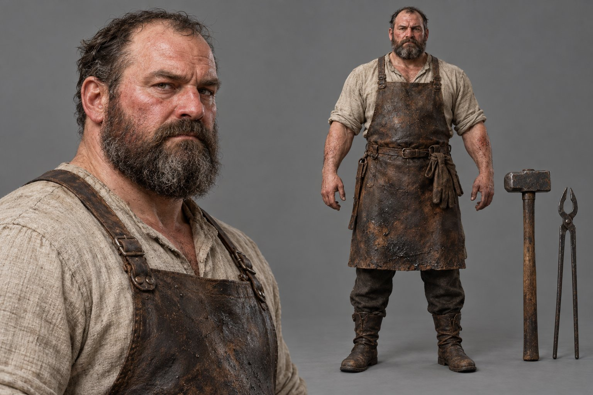
Parle
Le forgeron du hameau
Quête de métier : envoie le héros aux Mines de Fer Oubliées, chez Brutus ; Forge et Minage jusqu'au niveau 29. PNJ de l'essai de départage. Topographie § 4 ; Guide des Métiers § 1 ; D-177, D-178.
Qui 50 ans, très large d'épaules. Rude mais juste (comme l'essai T-0078 à T-0081).
Parler Bref, impératif, mots du métier ; bourru mais jamais méprisant. Voix grave, sonore.
MetaHuman Bruce 45 % + Jorge 35 % + Dominic 20 % · 182 cm · muscles 0,78, graisse 0,55 · peau u 0,36 rougeaude · dégarni, grande barbe brune grisonnante · à réaligner sur T-0081
Image : bonne au 1er essai (conforme aux consignes de T-0079 et T-0081).
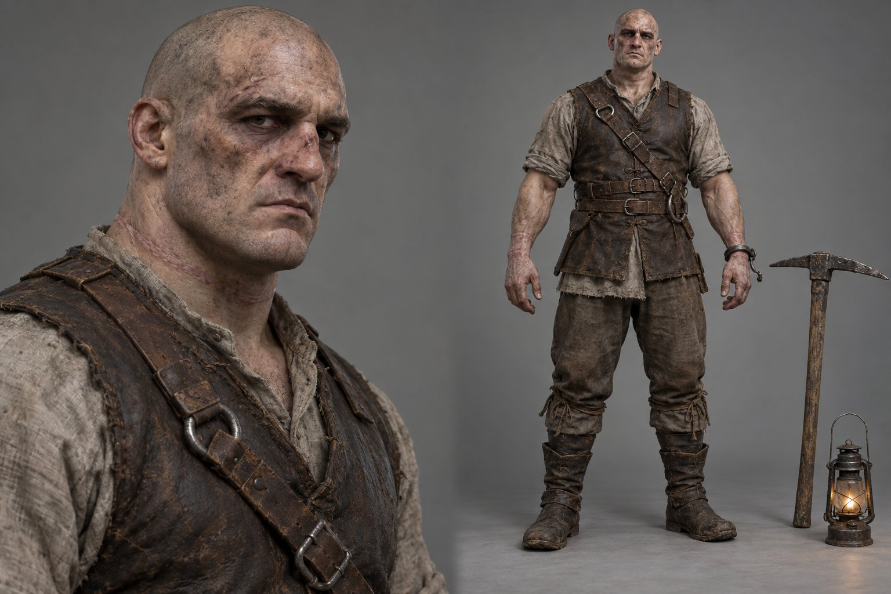
Parle
Brutus le Brisé
Maître du Minage, ancien esclave mineur évadé ; débloque le Minage dans les Mines de Fer Oubliées, puis retourne dans les Canyons. Guide des Métiers § 2.A ; D-17.
Qui 42 ans, très grand, massif. Taciturne, dur ; cicatrices des fers, anneau brisé au poignet.
Parler Très peu de mots, phrases sèches, silences. Voix basse, rauque.
MetaHuman Dominic 45 % + Bo 30 % + Kelvin 25 % · 192 cm · muscles 0,82, graisse 0,45 · peau u 0,22 blafarde · crâne ras, rasé · nez cassé par les repères
Image : bonne au 1er essai (fers, cicatrices du cou ; nez cassé peu marqué). Ajout de l'image (proposition) : lanterne-tempête à globe de verre, plus tardive que la lanterne à huile de la fiche.
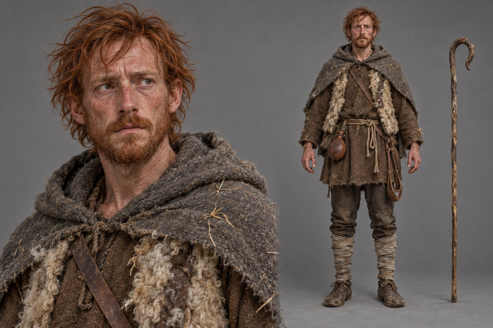
Parle
L'éleveur
« L'Agneau et le Loup » : tuer le loup qui décime son bétail, ou l'adopter et le ramener sans bruit (récompense double). Structure § 1 ; D-63, D-177.
Qui 35 ans, sec, nerveux. Épuisé, inquiet, peur panique du loup ; soulagé à la fin.
Parler Rapide, phrases coupées, compte ses bêtes. Voix moyenne, éraillée.
MetaHuman Lorenzo 45 % + Kelvin 30 % + Cameron 25 % · 176 cm · muscles 0,45, graisse 0,20 · peau u 0,24, taches de rousseur · roux cuivré, barbe inégale
Image : bonne au 1er essai.
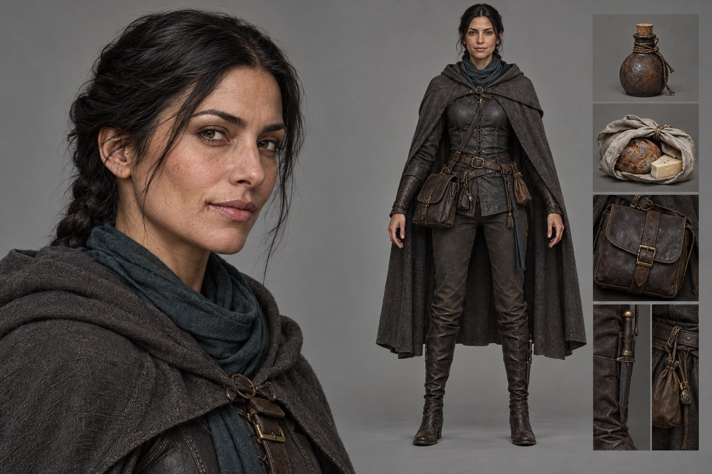
Parle
L'agent du Cartel
À l'auberge : propose d'empoisonner les déserteurs (Choix B), vend la nourriture frelatée ; ouvre le marché noir. Topographie POI A, § 5 ; D-39, D-41.
Qui 35 ans, mince, posée. Femme : proposition (les documents disent « un agent »).
Parler Voix basse, soignée ; ne dit jamais « poison » ; tout est un marché. Voix alto, douce.
MetaHuman Vivian 45 % + Jelena 30 % + Ada 25 % · 175 cm · muscles 0,60, graisse 0,30 · peau u 0,22, taches de rousseur · auburn, queue basse (tresse à créer)
Image : bonne au 1er essai (cicatrice sur la joue au lieu du menton).
Le Pont des Déserteurs
Seule sortie de la zone de départ : tuer les déserteurs (Choix A) ou les empoisonner (Choix B) ; sur le chef, l'insigne qui déclenche le premier souvenir (Topographie § 5 ; D-108).
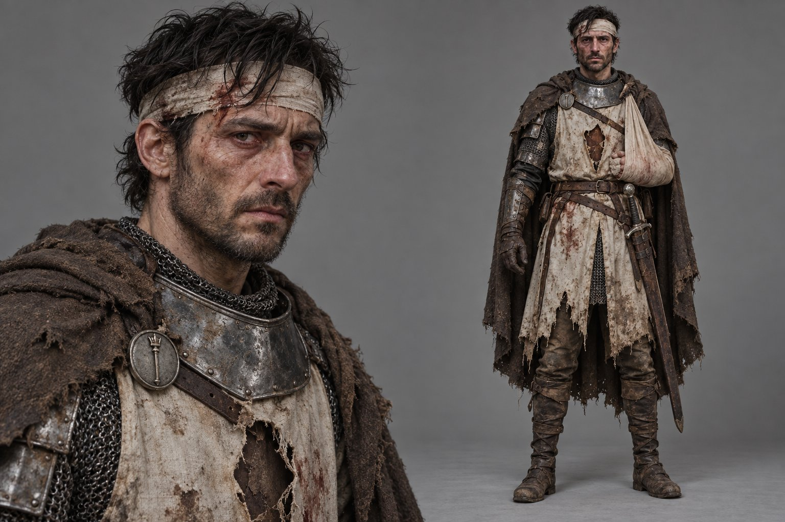
Parole à définir
Le chef des déserteurs
Ancien soldat d'élite de l'Ordre, déserteur et blessé ; rackette le hameau et le Cartel ; porte l'insigne d'unité sans nom identique à celui du héros. Topographie POI D, § 5 ; D-24, D-108.
Qui 38 ans, grand, amaigri. Amer envers l'Ordre, désespéré, encore discipliné. Sceptre découpé du tabard : proposition.
Parler Ton de commandement, phrases militaires, lucidité noire ; « soldat ». Voix baryton, usée.
MetaHuman Mateo 45 % + Isaiah 30 % + Lorenzo 25 % · 184 cm · muscles 0,55, graisse 0,15 · peau u 0,45 pâle · mi-longs noirs, longue barbe négligée (corrigé : pas la pilosité du héros)
Image : bonne au 1er essai (sceptre découpé visible) ; l'insigne rond au sceptre ne reprend pas celui du héros (heros-reveil.png) : à corriger au modèle 3D. Pilosité 3D changée (correction 1) : l'image reste la référence de la tenue seulement.
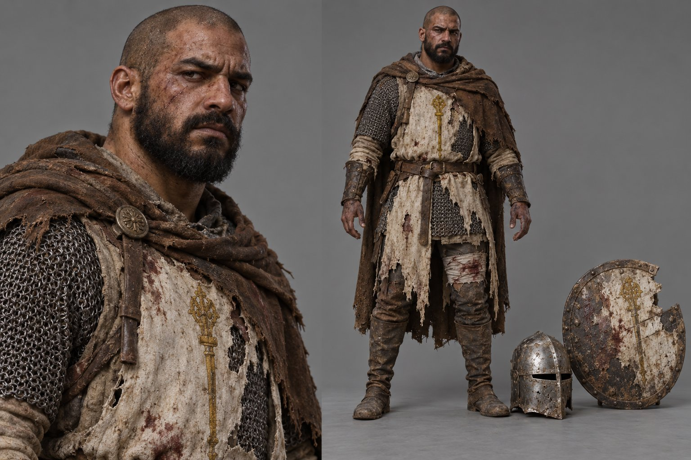
Parole à définir
Un déserteur blessé
Les hommes du chef, combattus au Choix A ; nombre et aspect à définir (inventaire § 5).
Qui Proposition : même équipement que le chef, plus pauvre ; 3 têtes différentes.
Parler Répliques de combat seulement (proposition).
MetaHuman 3 têtes : Isaiah, Mikel ou Trey dominants, peaux variées
Image : 2e essai retenu (le 1er ressemblait au héros, gardé dans originaux/refuses) ; réserve : le sceptre n'est pas découpé comme demandé.
Les portes d'Oakhaven (QP1)
Checkpoint de la Garde Royale et trois voies d'entrée, une par faction (QP1 ; D-139, D-150).
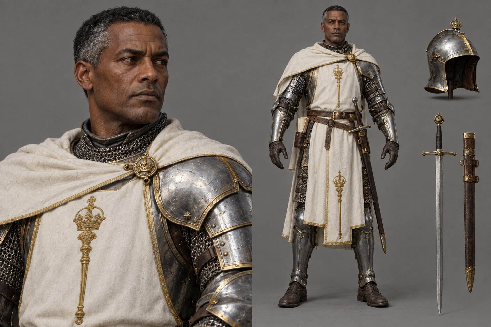
Parle
Le capitaine des portes
Garde Royale : fouilles, portes fermées ; méfiant après le massacre du pont, refuse l'entrée sans laissez-passer après l'empoisonnement. QP1 étape 1 ; D-40, D-130, D-139.
Qui 45 ans, grand, solide. Sévère, méthodique, inflexible. Gradé : cape courte ivoire (D-166, application proposée).
MetaHuman Omari 45 % + Trey 30 % + Isaiah 25 % · 186 cm · muscles 0,62, graisse 0,42 · peau u 0,86 · très courts, tempes grises, rasé
Image : bonne au 1er essai (cape courte, filet d'or) ; épée montrée deux fois (au côté et à part).
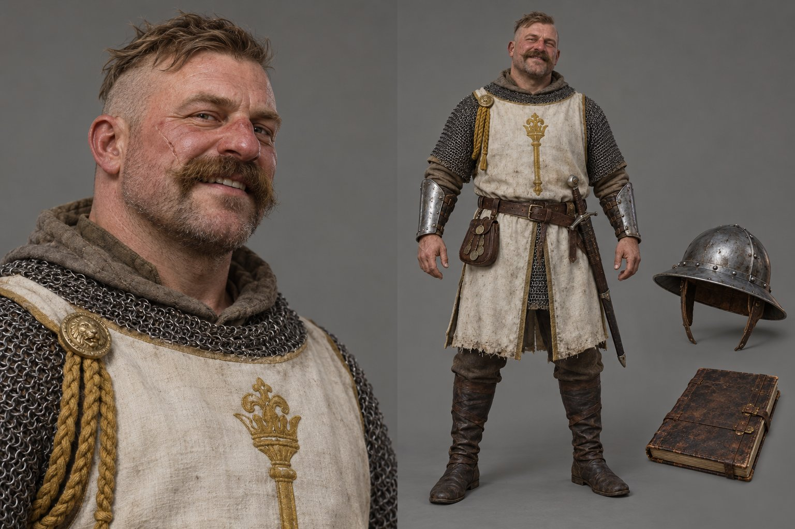
Parle
Le sergent recruteur
Voie A : cherche des mercenaires pour un nid de monstres ; donne le laissez-passer légal (Oakhaven seulement). QP1 ; D-139, D-150, D-173.
Qui 40 ans, trapu. Jovial, bruyant, recruteur roué. Cordon doré à l'épaule : proposition.
Parler Voix forte, tutoiement de caserne, chiffres et solde ; « mercenaire ».
MetaHuman Jorge 45 % + Kelvin 30 % + Walter 25 % · 176 cm · muscles 0,68, graisse 0,55 · peau u 0,30 rougeaude · brosse sable, moustache en morse
Image : bonne au 1er essai (cordon doré, moustache en morse, cicatrice) ; sceptre dessiné autrement que sur soldat-ordre.png. Ajout de l'image (proposition) : fermoir à tête de lion.
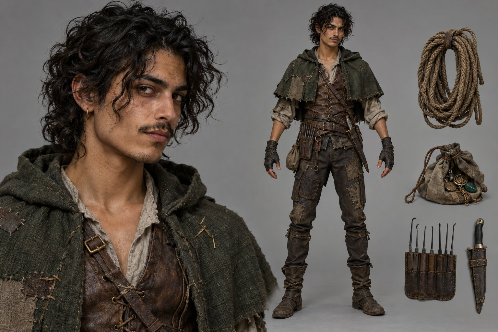
Parle
Le voleur des écuries
Voie B : a vu les exploits du héros au hameau ; chariot de vin de contrebande, garde corrompu ; une faveur due au Cartel. QP1 ; D-150.
Qui 22 ans, mince, agile. Effronté, charmeur ; tient ses marchés.
Parler Rapide, argot des bas-fonds, tutoie d'emblée ; rappelle la dette. Voix vive.
MetaHuman Cameron 50 % + Mateo 30 % + Kelvin 20 % · 170 cm · muscles 0,40, graisse 0,18 · peau u 0,62 · bouclés noirs, fine moustache
Image : bonne au 1er essai.
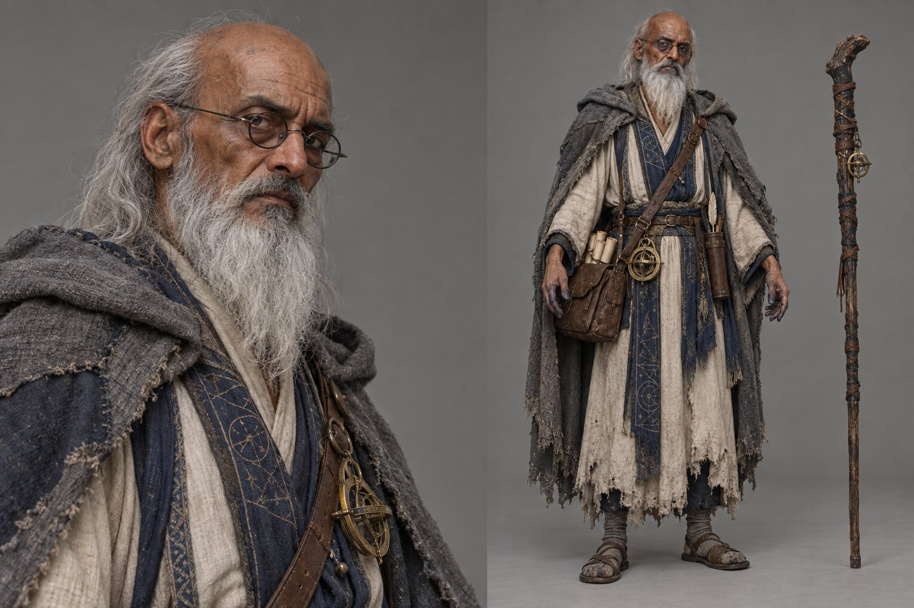
Parle
L'érudit banni
Voie C (Conclave) : veut un artefact confisqué par l'Ordre ; révèle l'aqueduc aux esprits ; entrée par les catacombes. QP1 ; D-150.
Qui 60 ans, maigre, voûté. Brillant, orgueilleux, amer, curieux jusqu'à l'imprudence.
Parler Phrases longues et savantes, ironie condescendante. Voix sèche.
MetaHuman Aoi 45 % + Lorenzo 30 % + Isaiah 25 % · 174 cm · muscles 0,18, graisse 0,22 · peau u 0,66 · sommet dégarni, longue barbe blanche
Image : bonne au 1er essai (lunettes, sommet dégarni, robe blanche et bleu nuit).
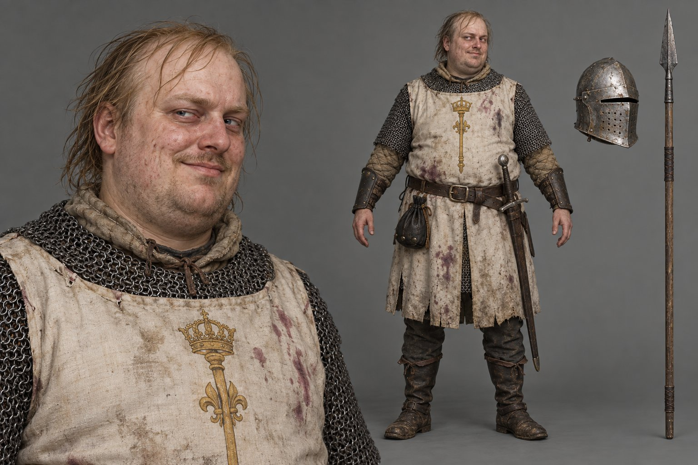
Parole à définir
Le garde corrompu
Voie B : le garde qu'on soudoie pour laisser passer le chariot. QP1.
Qui 32 ans, lourd. Cupide, lâche, obséquieux.
Parler Chuchote, phrases à demi-mot, marchande. Voix nasillarde.
MetaHuman Bo 45 % + Jorge 30 % + Kelvin 25 % · 175 cm · muscles 0,35, graisse 0,78 · peau u 0,22 pâle · blonds fins et gras, barbe clairsemée
Image : bonne au 1er essai (tabard taché de vin, bourse, heaume à part).
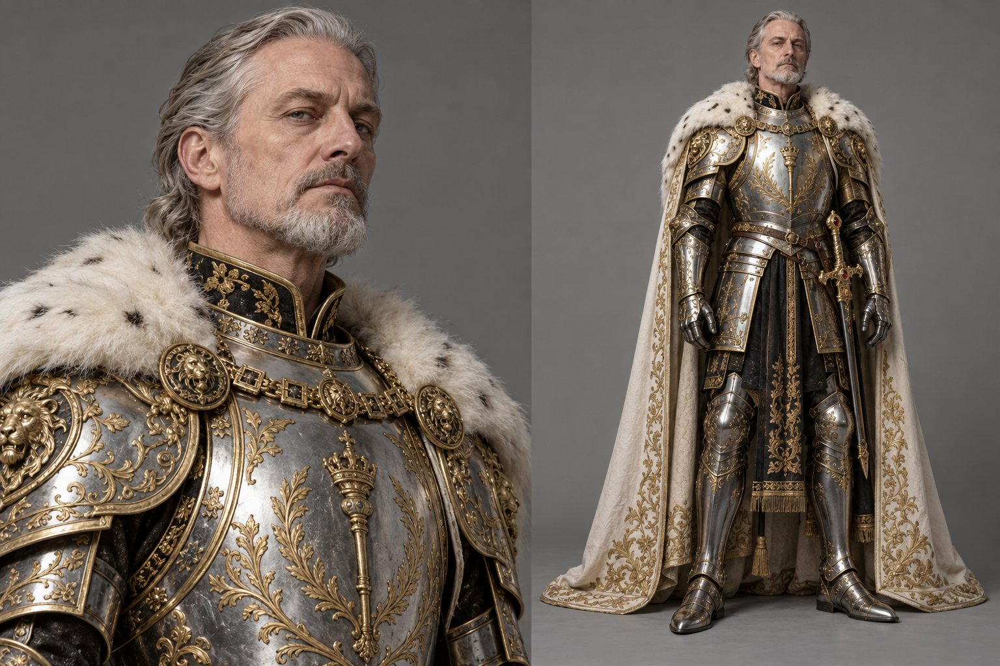
Muet dans la QP1
Le Général
Sur un destrier blanc, il croise le regard du héros sur la grand-place ; dans le deuxième souvenir, il décore l'officier. Tenue la plus ornée. QP1 ; D-166, D-167, D-171.
Qui 55 ans, grand, droit ; regard pâle et froid (proposition).
Parler Ne parle pas dans la QP1.
MetaHuman Kelvin 40 % + Walter 35 % + Bruce 25 % · 188 cm · muscles 0,55, graisse 0,35 · peau u 0,28 · argent en arrière, barbe grise nette
Image : bonne au 1er essai (armure d'apparat la plus ornée, cape brodée). Ajouts de l'image (propositions) : lions des épaulières, col d'hermine, col et jupe de brocart noir, hors des couleurs acier, or et ivoire (D-166).
Figurants
PNJ muets ou à répliques courtes qui font vivre les lieux (D-177).
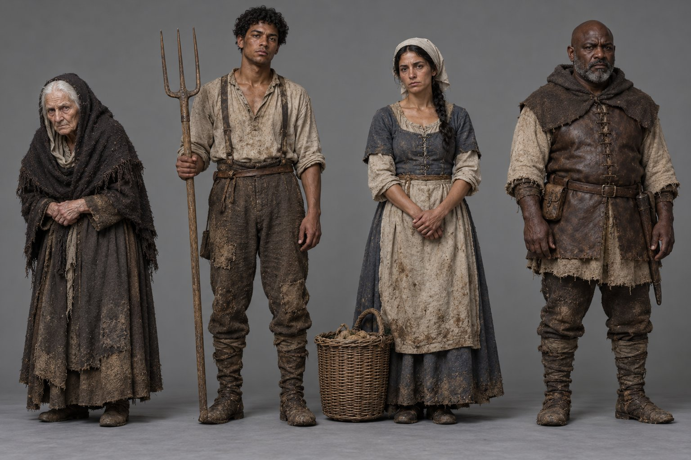
Répliques courtes
Les villageois du hameau
80 habitants, une seule conscience : méfiants, puis amicaux, ou hostiles et terrifiés. IA Collective § 1 ; Topographie POI A.
Qui Proposition : 8 têtes de base (femmes et hommes de 20 à 70 ans), laine écrue, lin, peau de mouton.
Parler Répliques courtes selon l'humeur du hameau.
MetaHuman 8 mélanges différents de ceux des PNJ nommés (détail dans fiches-pnj.md, § 4.1)
Image : bonne au 2e essai (correction 1) : peaux variées, jeune fermier bien distinct du héros. Le 1er essai (fermier trop proche du héros) est gardé dans originaux/refuses.
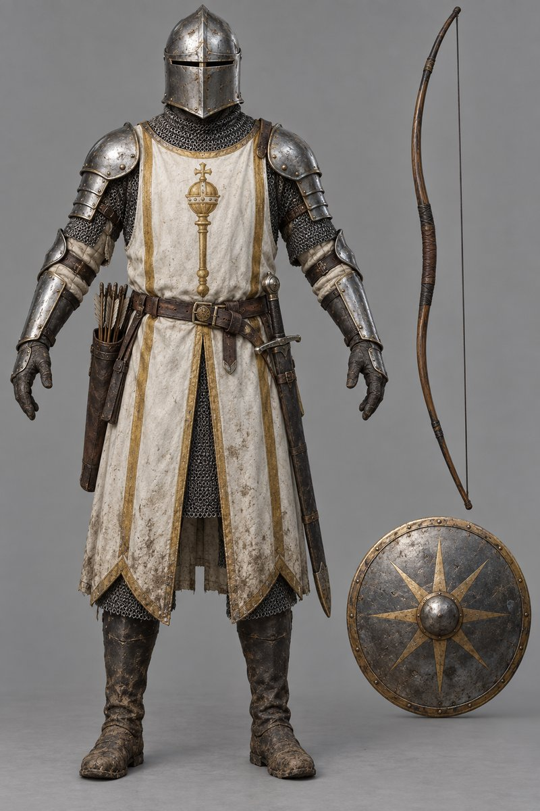
Répliques courtes
Les soldats de l'Ordre
Patrouille du didacticiel (tire sur un possédé, D-03) et gardes des portes. Fiche validée du 29/09 (personnages\soldat-ordre.png), reprise ici ; tenue du soldat (D-166).
Qui Heaume à fente : le visage se voit peu.
Parler Répliques courtes selon l'état de l'Ordre (D-139).
MetaHuman 3 têtes : Trey, Isaiah ou Kelvin dominants
Fiche validée du 29/09 (E:\aaa-proto\personnages), reprise telle quelle.
Des visages tous différents
Un visage de départ différent domine chaque PNJ ; aucun n'utilise ceux du héros (Victor et
Orlando), ni sa pilosité (cheveux courts en bataille et barbe de quelques jours) : le chef des déserteurs, de la
même unité que lui, a été corrigé dans ce sens. Âges de 22 à 65 ans, tailles de 160 à 192 cm, peaux du plus clair (u 0,22) au plus foncé (u 0,86).
PNJ
Visage dominant
Âge
Peau u
Taille
Cheveux, pilosité
Héros (pour mémoire)
Victor 65 %
30
0,27
180
courts en bataille, barbe de quelques jours
Chef du hameau
Walter 55 %
65
0,34
172
gris attachés, barbe courte
Forgeron
Bruce 45 %
50
0,36
182
dégarni, grande barbe brune
Brutus le Brisé
Dominic 45 %
42
0,22
192
crâne ras, rasé
Éleveur
Lorenzo 45 %
35
0,24
176
roux mi-longs, barbe inégale
Agent du Cartel
Sunita 40 %
35
0,52
168
noirs tirés en arrière
Aubergiste
Lani 40 %
55
0,28
160
relevés, grisonnants
Veilleuse
Vivian 45 %
30
0,22
175
auburn, queue ou tresse
Chef des déserteurs
Mateo 45 %
38
0,45
184
mi-longs noirs, longue barbe négligée
Capitaine des portes
Omari 45 %
45
0,86
186
très courts, rasé
Sergent recruteur
Jorge 45 %
40
0,30
176
brosse sable, moustache en morse
Voleur des écuries
Cameron 50 %
22
0,62
170
bouclés noirs, fine moustache
Érudit banni
Aoi 45 %
60
0,66
174
dégarni, longue barbe blanche
Garde corrompu
Bo 45 %
32
0,22
175
blonds fins, barbe clairsemée
Le Général
Kelvin 40 %
55
0,28
188
argent en arrière, barbe grise nette
À valider par le directeur
Genres proposés : l'agent du Cartel, l'aubergiste et la Veilleuse en femmes (les documents emploient le masculin générique ou ne disent rien).
Peuples et teintes de peau du Royaume : rien dans les documents ; la variété proposée est à valider (bible artistique, T-0088).
Tenues entre le soldat et l'officier (D-166) : cordon doré du sergent, cape courte du capitaine.
Aspect des déserteurs : tabard au sceptre découpé, blessures.
Couleurs et emblème des Veilleurs (bleu ardoise, demi-soleil levant).
Rôles à fusionner ou non : agent du Cartel et marchand du Cartel qui apporte les nouvelles ; aubergiste et marchand de troc.
Qui parle parmi l'aubergiste, la Veilleuse, le chef des déserteurs et le garde corrompu ; le chef des déserteurs remarque-t-il l'insigne du héros avant la fin ?
Qui dit « Capitaine » au héros (D-172, point ouvert) : les fiches proposent d'autres titres.
Brutus : de qui il était l'esclave.
Forgeron : à réaligner sur les réglages et l'image de l'essai (T-0081, T-0079), en cours cette nuit.
Forme du sceptre doré : elle change d'une image à l'autre ; la référence reste soldat-ordre.png (D-166), à fixer dans la bible artistique (T-0088). L'insigne du chef des déserteurs doit reprendre celui du héros.
Sources
Documents : Topographie de la Zone de Départ · Guide Complet des Métiers · Quête Principale 1 ·
Structure - Quêtes Secondaires par Zone · IA Collective et Réactivité des PNJ · fiches de factions et GDD.
Décisions : D-03, D-17, D-24, D-35, D-38 à D-41, D-63, D-108, D-130, D-139, D-150, D-155, D-163, D-166, D-167,
D-170 à D-173, D-177 à D-179. Inventaire du prototype : .equipe/etudes/cout-proto/inventaire.md (§ 4.2).
Images : prompts et originaux PNG gardés dans le dossier du chantier (travail/prompts.md, originaux/), non publiés.